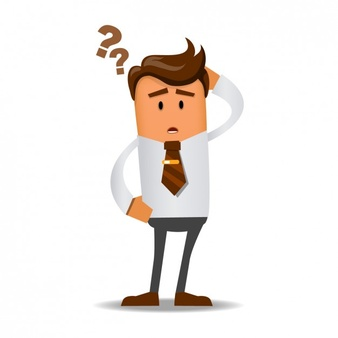
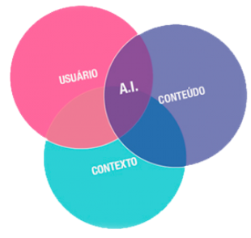

Criação de Conteúdo na Web
O que é Conteúdo?
Conteúdo é aquilo que está contido ou colocado em algum recipiente. Assunto, tema, matéria de carta, livro etc, ou seja, conteúdo na web é o que existe de informações em sites, vídeos, imagens... até uma simples música é conteúdo, em um site da web é uma junção de vários ou apenas um conteúdo, pois ele passa informações para o usuário. O conteúdo deve passar primeiramente antes de ser publicado por várias etapas como: Auditoria, Análise, Estratégia, Categoria, Estrutura, Criação, Revisão, Aprovação, Taggear, Formatação, Publicação, Atualização, Arquivamento.
Normalmente quem é responsável por todo esse tipo de trabalho é o Editor, é ele quem decide a pauta, ou temas que serão publicados, define o estilo da redação, faz a revisão final dos textos etc... é um trabalho que exige muita responsabilidade pois o responsável que editou/escreveu está sob as leis de utilização da web, qualquer tipo de conteúdo que infringe leis ou que viola direitos autorais está sob direito de punição e poderá responder judicialmente por isso.
Empresas podem contratar funcionários para gerenciar e criar conteúdos para que assim não haja problemas futuramente, pois o editor contratado vai fazer todo processo de criação e análise para que direitos autorais não sejam violados. Mas tem alguns problemas, esse tipo de método pode fazer com que a empresa perca completamente o controle sobre o conteúdo, fazendo com que o conteúdo criado perca a qualidade ou até mesmo o foco da empresa.
O que é Estratégia de Conteúdo?
Estratégia de conteúdo é a prática de planejar a criação, entrega e gerência de conteúdo útil e interessante para os usuários. Ela abrange 3 pontos, os quais são:
• Criação – Qual é o conteúdo que será criado? Por quê será criado? Como ele será estruturado e encontrado? De onde o conteúdo virá? Quem será o responsável por criá-lo?
• Entrega – Como o conteúdo ficará online? Quem são os revisores e aprovadores? Quem irá publicá-lo? Quais ferramentas dão garantia que sua audiência encontrará o conteúdo?
• Gerenciamento – O que acontecerá com o conteúdo depois que ele estiver publicado? Qual é o plano para atualizar e arquivar o conteúdo? Como o conteúdo será avaliado?
Dessa forma observamos que ele serve justamente para organizar o conteúdo apresentado, criando assim um tipo de padrão para a criação. A estratégia de conteúdo deve informar ao usuário:
• Qual conteúdo é necessário e por quê?
• Como o conteúdo estará estruturado?
• Como os usuários encontrarão o conteúdo?
• Como iremos de hoje até o lançamento?
• O que fazer depois que o conteúdo estiver publicado?
• Como estas recomendações impactarão o negócio
O que é Arquitetura da Informação?
A arquitetura da informação é o desenvolvimento da organização e dos sistemas de navegação para ajudar as pessoas a encontrar e gerenciar informações de forma mais fácil
À medida que a informação prolifera de forma exponencial, a usabilidade vem se tornando o fator crítico de sucesso para websites e aplicações. Uma boa AI estabelece as fundações necessárias para que um sistema de informação faça sentido para seus usuários.
O que é Estratégia Editorial?
A estratégia editorial define as linhas mestras pelas quais todo o conteúdo online é gerenciado: valores, voz, tom, preocupações legais e regulamentares, conteúdo gerado pelo usuário e assim por diante. Essa prática também define o calendário editorial online de uma organização, incluindo os ciclos de vida do conteúdo. Você nunca quis ser um editor, entretanto, é extremamente necessário uma estratégia editorial que comtemple todos os aspectos da criação, entrega e gerenciamento do conteúdo.
O que é Web Writing?
A web writing é a prática de escrever conteúdo útil e prático especificamente para ser fornecido online. Isso é muito mais inteligente do que a mídia impressa. Um escritor efetivo da web deve entender o básico sobre experiência do usuário, ser capaz de entender a informação dos documentos da arquitetura da informação, escrever metadados eficientes e gerenciar um inventário de conteúdo em constante mutação.
Como identificar um estrategista de conteúdo?
O estrategista de conteúdo é a pessoa responsável por realizar o conteúdo de um projeto. Essa pessoa é defensora do conteúdo durante todo o projeto. Fornece a pesquisa e a análise de base daquilo que os envolvidos precisam para tomar decisões inteligentes sobre o conteúdo. Cria recomendações para o conteúdo, baseando-se nas necessidades do negócio e dos usuários. Trabalha com a organização para implementar o conteúdo online. A estratégia de conteúdo irá ajudálo a fornecer um conteúdo que inspire confiança. Que leve à ação. Que construa lealdade. No prazo. Dentro do orçamento.
Enfim, como o conteúdo atrai o usuário?
Para atrairmos usuários pro conteúdo apresentado devemos seguir as dicas aqui apresentadas, claro sempre inovando, mas evitando fugir muito do que foi proposto, pois fugir do padrão pode deixar o conteúdo cansativo ou desorganizado.
Exemplo: um site sobre vendas deve se ter imagens que mostram o produto a ser vendido, o preço destacado dos outros conteúdos e também uma boa ortografia para que passe confiança para o usuário que deseja fazer compras no site. Evitar colocar anuncios desconexos com o que está sendo vendido, não podemos ter anúncio de supermercado num site que vende produtos de informática. Caixas desalinhadas podem deixar o site confuso.
Tudo isso deve ser levado em conta para que o usuário não se perca e que desperte seu interesse pelo conteúdo apresentado.